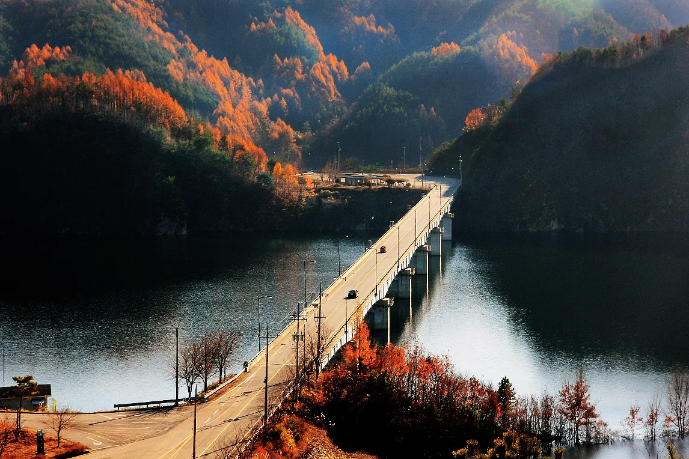
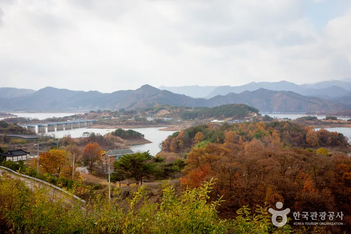
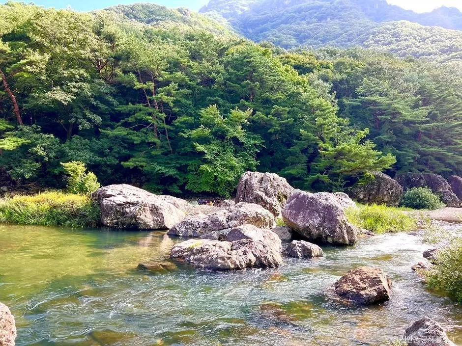
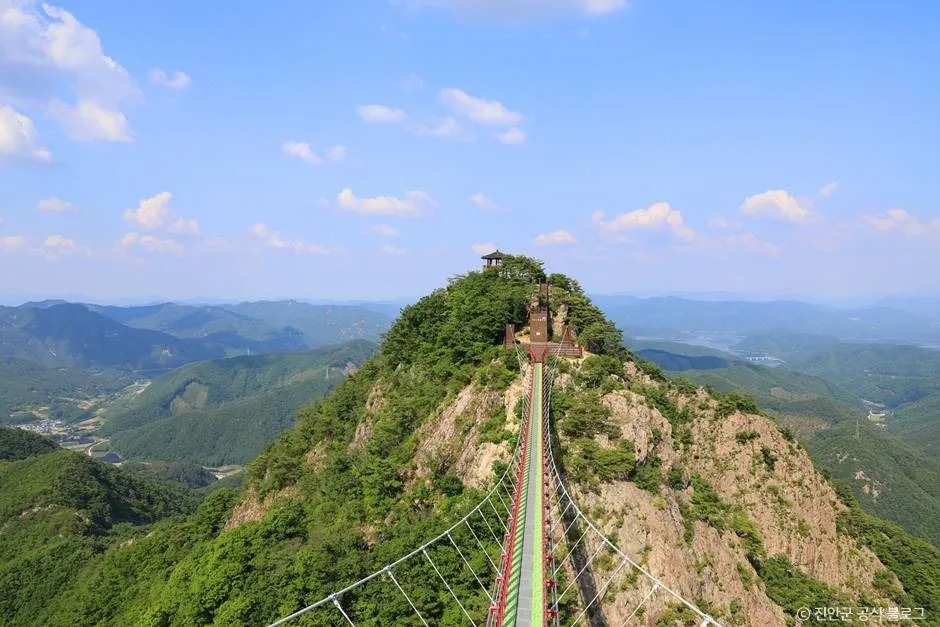
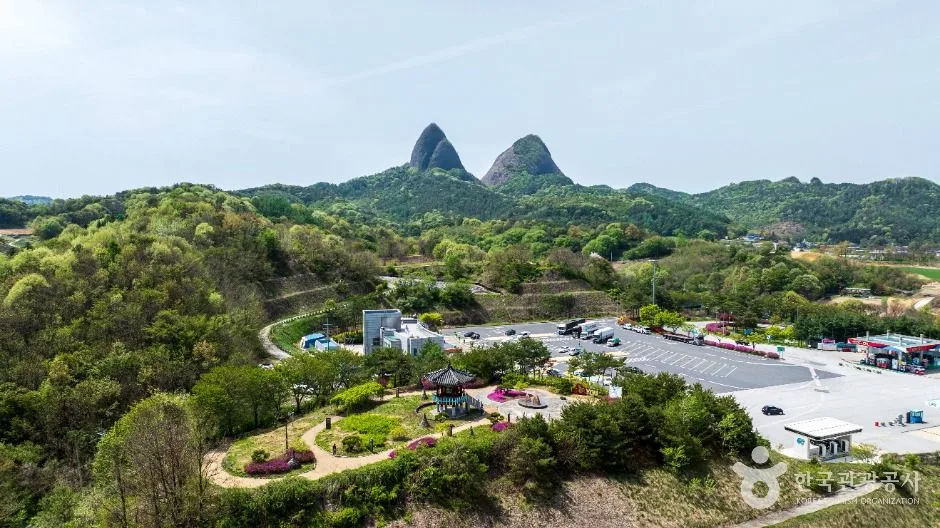
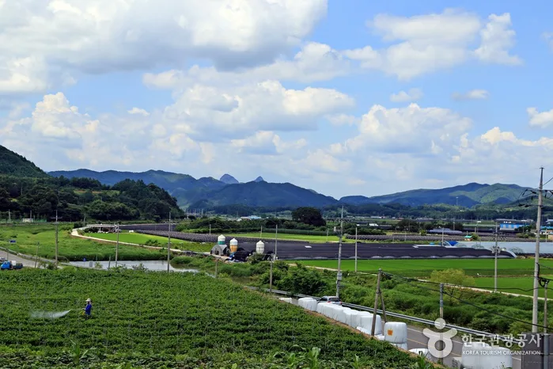

▲ 용담호를 가로지르는 다리와 호반도로. 산과 호수가 겹치는 가을 단풍철 풍경이다 ⓒ 투어전북(전북특별자치도)
진안군을 지도에서 보면 커다란 호수 하나가 눈에 띈다. 용담호다. 금강 상류를 막아 만든 인공호수로, 총저수량 8억 1,500만 톤에 이르는 국내 5위 규모 담수호다. 그런데 이 호수를 특별하게 만드는 건 크기가 아니라 호수를 통째로 한 바퀴 도는 64.6km짜리 일주도로가 나 있다는 점이다. 한국관광공사와 전북특별자치도가 나란히 가을철 드라이브 코스로 소개해 온 곳이지만, 정작 서울·수도권에서는 이름조차 낯설다.
1. 인공호수인데 왜 이렇게 자연스러울까
용담호는 2001년 10월 완공된 용담다목적댐이 만든 호수다. 높이 70m, 길이 498m의 콘크리트 차수벽형 석괴댐이 금강 상류를 막아섰고, 진안군 1개 읍·5개 면이 물에 잠겼다. 전주권 생활용수 공급을 위해 만경강 상류로 하루 135만 톤의 물을 보내는 유역변경식 도수터널도 함께 갖췄다.

▲ 정천면 인근에서 내려다본 용담호. 인공호수지만 호안에 상업시설이 거의 없어 자연 그대로의 풍경이 남아 있다 ⓒ 대한민국 구석구석(한국관광공사)
그런데도 풍경은 인공호수 티가 잘 안 난다. 댐 건설 이후에도 호안에 펜션이나 상업시설을 거의 들이지 않아, 물가 산책로와 마을 몇 곳을 빼면 대부분 구간이 산과 물만 마주 보는 구조다. 호수 주변에 별다른 인공 시설물이 없다는 점이 오히려 이곳을 드라이브 명소로 만든 배경이다.
2. 64.6km, 전망대 4개를 지나는 순환 코스
드라이브 시작점으로 가장 많이 꼽히는 곳은 진안읍 운산리다. 여기서 30번 국도와 13번 국도, 795번 지방도를 갈아타며 호수를 한 바퀴 돈다. 진안읍을 나서 상전면·안천면·용담면·정천면을 차례로 거쳐 다시 진안읍으로 돌아오는 순환 구조이며, 방향에 따라 북측(정천→용담)과 서측(상전→안천) 코스로 나눠 부르기도 한다.
정천면에서 용담면을 거쳐 댐 본체로 향하는 북측 코스는 광활하고 탁 트인 파노라마 뷰를 선사하고, 상전면과 안천면을 지나는 서측 코스는 아기자기하고 정겨운 풍경을 보여준다. 두 코스의 성격이 다르다 보니 시계 방향으로 돌든 반시계 방향으로 돌든 풍경의 인상이 확연히 달라진다.
| 구간 | 경유 도로 | 주요 스팟 | 특징 · 참고 소요시간 |
|---|---|---|---|
| 정천 → 용담(북측) | 30번 국도 | 정천면 모정리 망향의 광장 전망대, 용담대교 | 광활하고 탁 트인 파노라마 뷰 · 약 20~30분 |
| 용담 → 안천 | 13번 국도 / 795번 지방도 | 용담 망향의 동산(용담대교 북단), 태고정 | 댐 본체와 호수를 가까이서 조망 · 약 20~30분 |
| 안천 → 상전(서측) | 795번 지방도 | 상전면 망향의 광장 전망대('고향 그리운 집') | 아기자기하고 정겨운 호안 풍경 · 약 20~30분 |
| 상전 → 정천(복귀) | 30번 국도 | 진안읍 운산리 방면 복귀 | 출발점 복귀, 순환 완료 · 약 20~30분 |
구간별 시간은 정차 없이 이동했을 때 기준이다. 전망대마다 차를 세우고 사진을 찍으며 돌면 전체 64.6km를 완주하는 데 반나절 가까이 잡는 편이 현실적이다. 도로 자체는 대형 상업시설이 없는 지방도·국도라 커브가 잦고 편도 1차로 구간도 섞여 있어, 여유 있게 속도를 낮추고 도는 코스에 가깝다.
3. 잠깐 세워야 할 지점들 — 망향의 동산과 태고정
호반 곳곳에는 '망향의 동산'이라는 이름의 작은 동산이 세워져 있다. 수몰된 실향민들의 향수를 달래기 위해 한국수자원공사가 조성한 것으로, 대개 조망이 좋은 둔덕 위에 자리한다. 이 가운데 용담대교 북단의 용담 망향의 동산이 가장 조망이 좋다고 알려져 있다. 상전면에 세워진 전망대에는 '고향 그리운 집'이라는 현판이 걸려 있어, 오르면 앞뒤로 용담호 풍경이 시원하게 펼쳐진다.
▲ 진안군 내 벚꽃 가로수길. 용담호 일주도로는 가을 단풍뿐 아니라 계절마다 다른 표정을 보여준다 ⓒ 진안군청 공식 블로그
1752년 지어진 정자 태고정(太古亭)도 눈여겨볼 만하다. 원래 다른 자리에 있었으나 용담댐 건설로 수몰 위기를 맞아 1998년 지금 위치로 옮겨졌다. 호수 중앙부에 자리해 동쪽과 서쪽 모두에서 물을 마주 보는 구조다.
주변 계곡·전망 명소

▲ 운일암반일암 계곡. 명덕봉과 명도봉 사이 주자천을 따라 형성된 협곡으로, 차로 접근 가능한 거리에 있다 ⓒ 대한민국 구석구석(한국관광공사)
일주도로에서 살짝 벗어나면 운일암반일암 계곡이 있다. 운장산 동북쪽, 명덕봉과 명도봉 사이 약 5km 구간을 주자천이 흐르며 만든 협곡으로, 구름다리와 무지개다리에서 보는 계류와 기암이 볼거리다. 차로 이동 가능한 거리라 용담호 드라이브에 곁들이기 좋다.

▲ 진안 구봉산 전망대의 출렁다리. 아홉 봉우리 능선을 잇는 야간관광 명소로도 소개된다 ⓒ 진안군청 공식 블로그
시간 여유가 있다면 구봉산 전망대까지 발걸음을 넓혀도 좋다. 아홉 개 봉우리가 이어지는 능선 위에 출렁다리와 전망대가 설치돼 있어, 진안 일대를 내려다보는 야간관광 코스로도 안내되고 있다.
4. 오후엔 마이산까지 — 반나절 연계 코스
용담호 드라이브를 오전에 마쳤다면, 오후 코스로 가장 많이 꼽히는 곳이 마이산이다. 말의 귀를 닮은 두 봉우리(암마이봉·수마이봉)로 유명한 도립공원으로, 마이산 남부주차장에서 용담호 본댐 인근까지는 차량으로 약 20~30분 거리다. 오전엔 마이산 탑사의 돌탑 길을 걷고 오후엔 용담호 일주도로를 달리는 식으로 하루 일정을 짜는 여행자가 많다.

▲ 마이산 남부주차장에서 올려다본 암마이봉·수마이봉. 용담호에서 차로 20~30분 거리다 ⓒ 대한민국 구석구석(한국관광공사)
▲ 마이산 탑사. 봉우리 사이 계곡에 쌓아 올린 돌탑들이 마이산의 대표 이미지다 ⓒ 대한민국 구석구석(한국관광공사)
마이산 도립공원과 탑사에 대한 더 자세한 정보는 대한민국 구석구석에서 확인할 수 있다. 대한민국 구석구석 마이산 페이지 바로가기
5. 언제, 어떻게 가야 할까
단풍은 11월 둘째 주 전후가 절정으로 꼽힌다. 단풍과 호수를 동시에 감상할 수 있는 드라이브 코스가 흔치 않다는 점에서, 늦가을 방문객이 몰리는 시기이기도 하다. 방문객이 몰리는 낮 시간보다는 이른 아침이나 해 질 무렵에 움직이면 한적하게 풍경을 즐길 수 있다.

▲ 진안 들녘 너머로 보이는 산줄기. 용담호를 둘러싼 산세가 사계절 내내 코스의 배경이 된다 ⓒ 대한민국 구석구석(한국관광공사)
주차와 편의시설은 넉넉하지 않은 편이라 미리 확인하고 움직이는 게 좋다. 용담호 자체는 별도 주차시설이 없다고 안내돼 있어, 전망대나 망향의 동산, 용담댐 물문화관 같은 지정 지점에 세우는 편이 안전하다. 내비게이션에는 '전북 진안군 용담면 월계리' 또는 '용담댐'을 입력하면 무난하게 접근할 수 있고, 문의는 진안군청(063-430-2228)으로 하면 된다.
정리하면 이렇다. 용담호 일주도로는 화려한 관광 인프라 대신 산과 호수만 번갈아 보여주는 담백한 코스다. 64.6km를 다 돌아도 큰 이벤트는 없지만, 그 단조로움이야말로 이 길이 '아무도 안 알려준 드라이브 명소'로 남아 있는 이유다.